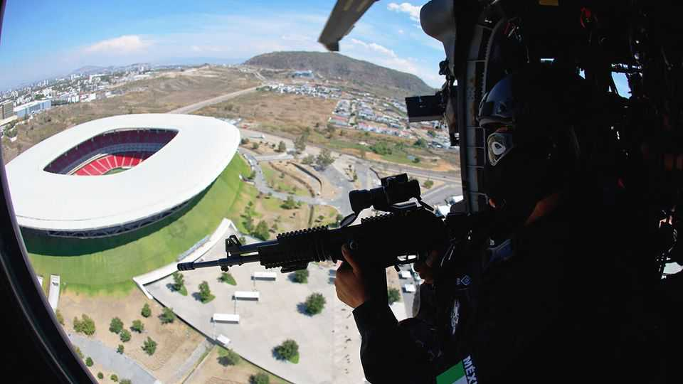

The World Cup will test Mexico’s control over its territory
Donald Trump, who says the government is too weak to combat the drug gangs, will be watching
June 11th 2026

When the World Cup kicks off on June 11th, Guadalajara is eager to show visitors more than tequila, mariachi and tortas ahogadas, the spicy sandwich for which the city is known. The capital of Jalisco state—motto: “Jalisco is Mexico”—it is also a hub for technology, innovation and foreign investment. “We know Guadalajara is currently in the world’s spotlight,” says Monserrat Hidalgo, head of the local organising committee for the competition.
The tournament will be the most-watched sporting event ever, with 104 matches spread across 16 cities in three countries. The United States will host 78 matches, with only 13 each in Canada and Mexico. Mexico, which will host matches in Monterrey and Mexico City, as well as Guadalajara, is attracting particular scrutiny. The country is one of the world’s most violent. Criminal groups control territory, extort money from businesses and are capable of paralysing entire cities. In February, after special forces killed Mexico’s most-wanted drug boss, Nemesio Rubén Oseguera Cervantes—better known as El Mencho, the leader of the Jalisco New Generation Cartel—gangsters brought parts of Guadalajara to a standstill, blocking the roads with burning lorries. Mexico is the third-most-dangerous country ever to host the competition, after South Africa and Brazil. Forty-four people were murdered on average every day in May.
Despite these facts, the gangs themselves are not the biggest security risk facing the tournament. Criminal groups have little incentive to disrupt it, says Eduardo Guerrero of Lantia, a consultancy in Mexico City. An attack on a stadium would provoke a response not just from Mexico but perhaps from the United States as well. That would be bad for business. The gangs will certainly be cashing in, but quietly, through fraud, prostitution and other illicit activities. Criminals everywhere “see the World Cup and they see dollar signs”, says Craig Timm, a former official at the US Department of Justice.
General Román Villalvazo Barrios, who is overseeing the government’s World Cup security preparations, says his officials are preparing for a broad range of threats that go well beyond the gangs. The plan includes roughly 100,000 soldiers, police officers and private security guards, alongside surveillance technology and extensive cordons around stadiums and fan zones.
Security planners worry most about soft targets. The Centre for Strategic and International Studies, a think-tank in Washington, argues that the most plausible terrorist threat to the competition comes from a lone attacker or small group targeting fan zones, transport hubs, hotel districts, restaurants or queues outside stadiums. But such attacks are rare in Mexico, where spectacular violence is usually caused by gangsters rather than by terrorists. They are more common in the United States, where it is easier to get guns.
Drones are another concern. The host countries have developed a joint strategy to detect and counter unauthorised aircraft around stadiums and fan events. Officials worry not only about sophisticated attacks but also about amateur operators causing disruption or panic.
Other risks are less dramatic but potentially just as disruptive. The three countries have developed common health protocols to watch for the spread of Ebola, measles and other diseases. Border crossings, visa procedures and immigration enforcement could also complicate travel for fans and teams. Donald Trump has already created uncertainty. After he suggested Iran’s football team could play matches in American territory but not stay in the country overnight, Mexico’s president, Claudia Sheinbaum, offered to host the team instead.
Mexico faces additional logistical challenges. Its infrastructure is weaker than its northern neighbours’. The main airport in Mexico City (which will host five matches) has been given a facelift, but has long been too small for the country’s needs. Traffic remains notoriously bad. Protests may well cause disruption. On June 1st security forces fired tear gas at teachers demonstrating in Mexico City who were demanding salary increases; the teachers are planning more protests around the World Cup matches. Relatives of the large numbers of people who have disappeared in Mexico, probably killed or forcibly recruited by drug gangs, also hope to use the tournament to draw attention to their cause.

The preparation is worthwhile. Deloitte, a consultancy, estimates that the tournament will add $2.73bn to Mexico’s economy, about 0.14% of annual GDP, and generate more than 100,000 temporary jobs. For the weakest economy among the host countries, the World Cup also offers Mexico a rare chance to present itself as safer, richer and more modern than many outsiders assume.
But it also carries political risk. For months Mr Trump has insisted that Mexico is not doing enough to fight the gangsters operating on its territory or their drug-trafficking into the United States. He has designated several Mexican gangs as “terrorist” organisations and has repeatedly suggested that he might take direct military action against them. Relations with Ms Sheinbaum have become more strained as Mr Trump has adopted an increasingly unilateral approach.
Tension increased recently after two American officials, widely reported to be CIA officers, died in a car crash on April 19th after an anti-drug operation in the northern state of Chihuahua. Ms Sheinbaum subsequently warned the United States not to conduct unauthorised operations on Mexican soil. On April 30th American prosecutors charged Rubén Rocha Moya, the governor of neighbouring Sinaloa and a member of Ms Sheinbaum’s Morena party, with helping the Sinaloa cartel to move drugs into the United States in exchange for money and political support. American authorities have reportedly revoked the visas of two other governors who are Morena members.
Mexico’s 13 matches will run over the next month; the last one will be in Mexico City on July 5th. Any foul-ups—whether because of organised crime, a drone, a protest, a border dispute or a transport failure—will not be judged in isolation. The worry is that they will become grist for Mr Trump’s argument that Mexico cannot control its own territory. For Ms Sheinbaum that, not drug gangs, is the World Cup’s biggest risk. ■
Sign up to El Boletín, our subscriber-only newsletter on Latin America, to understand the forces shaping a fascinating and complex region.